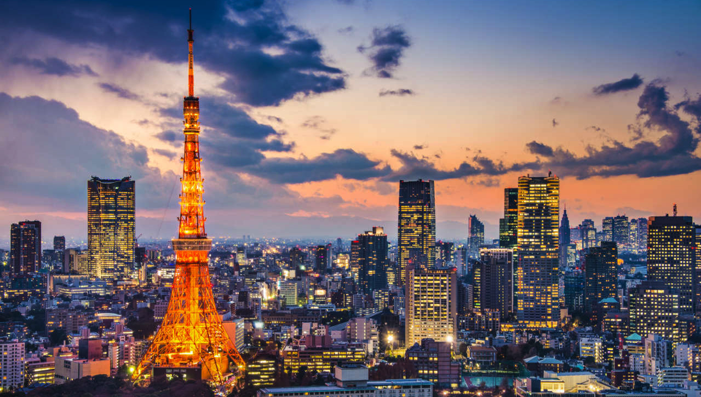

Tokyo
Tokyo (東京, Tōkyō) is Japan's capital and the world's most populous metropolis.
It is also one of Japan's 47 prefectures, consisting of 23 central city wards and
multiple cities, towns and villages west of the city center. The Izu and Ogasawara
Islands are also part of Tokyo.

The 23 wards Area
consisting of 23 central city wards and multiple cities, towns and villages west of the city center.
Night Views
As dusk falls, the sprawling metropolis of Tokyo transforms into a city of bright lights.
festa
Red, yellow, blue, and white—fireworks lighting up the night sky with a booming sound signal the arrival of summer in Japan.